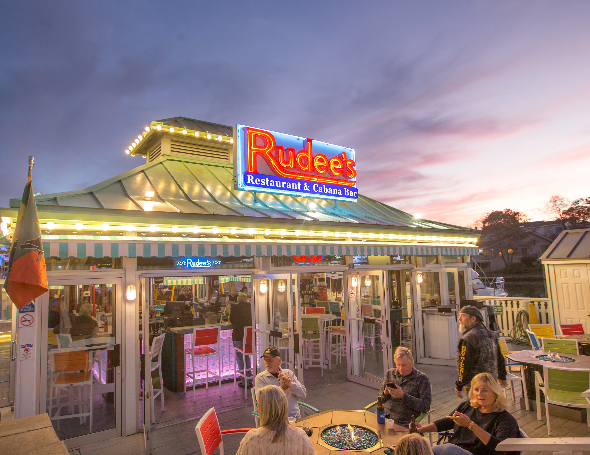
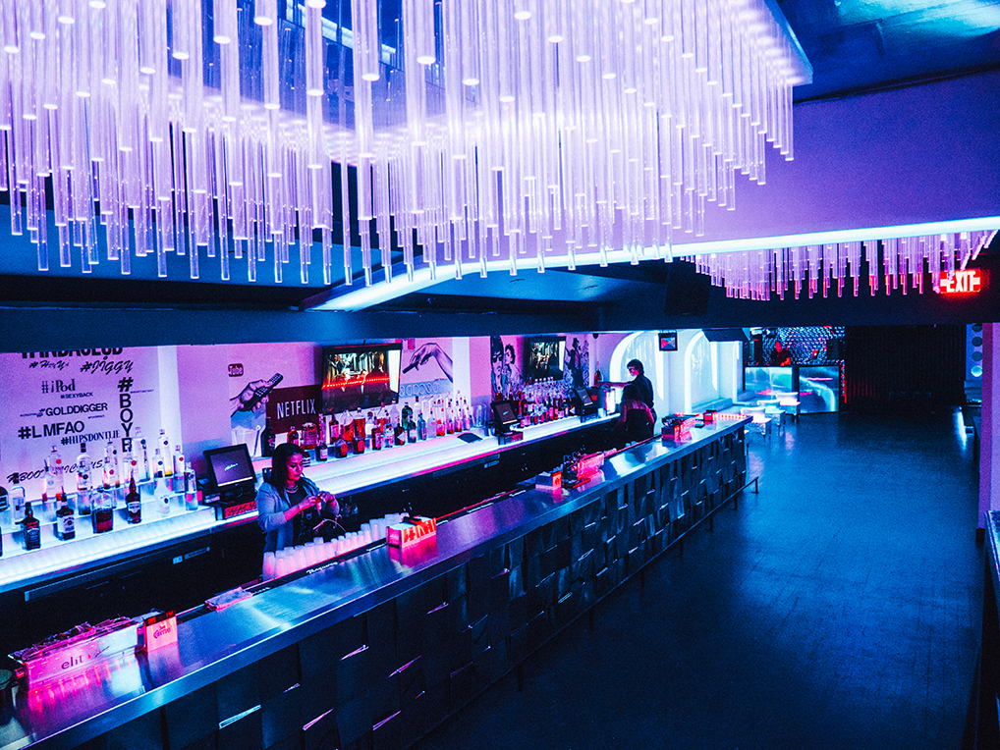
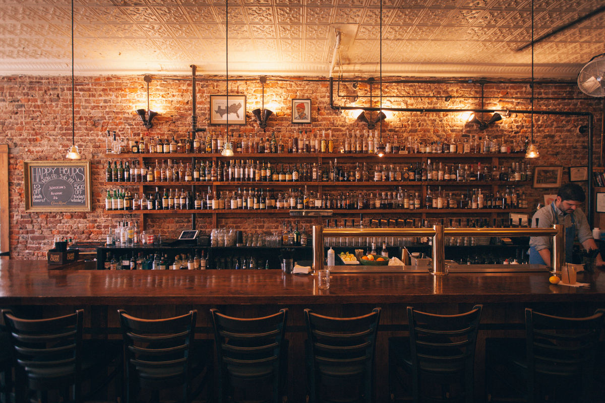

Submerge yourself in the moment with friends and loved ones where you can drink, eat, and play. Our spacious location offers a brewery, restaurant, arcade, and outdoor patio with fire pits. No matter what the mood, we have something for everyone. Bingo Beer Company invites you to leave your cares at the door and get down to the fun stuff!
The Tombs attracts a young clientele, with Georgetown students favoring the spot. The bar offers a good selection of wines and beer, as well as classic cocktails and variations on favorites. For something new, try the Peanut Butter Old Fashioned, featuring Sheep Dog Peanut Butter whisky, orange bitters, and Hartley & Gibson PX. The menu offers fan favorites like shrimp and grits, chicken quesadillas, sandwiches, and more. With affordable rates and even a kid’s menu, everyone can enjoy The Tombs.
Located at the Virginia Beach Oceanfront for over 40 years Rudee’s Restaurant and Cabana Bar, situated directly on the Rudee Inlet Marina, offers unique indoor and outdoor experiences by providing authentic waterfront views, fresh seafood delivered daily, and a fun relaxed setting that all can enjoy. Whether you want to come with the family or kick back after work, come and see for yourself why we are one of the top rated restaurants in Virginia Beach.
Located in the heart of the Nation’s Capital, Decades is a 15,000 square foot retro-themed nightclub with 6 floors, 8 bars and 5 DJ’s. Celebrating club culture, DJs, and the greatest hits from the ‘80s, ‘90s, 2000s, 2010’s and the present, the club showcases graffiti, gadgets, gears and everything we love about the energy and excitement of nightlife and music of all genres.
Always packed, The Whiskey Jar is one of the premier locations in Charlottesville for whiskey lovers. It offers over 125 types of bourbon, Irish whisky, rye, Scotch, and whiskeys, so you can always find something new to try.